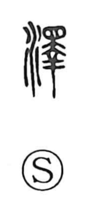

沢

Uncategorized
Kun: sawa | On: taku
marsh ・ favor ・ luster ・ gloss ・ abundance
Explanation
Originally written 澤, this is a phono-semantic character: the water element indicates a watery scene, while the right-hand component 睪 supplies the sound, yielding the on reading taku (as in related phonetic series like 擇 and 鐸). Classical sources describe it as water coming to rest or water mingled with plants—an image of a marsh or lakeside. From the sheen of still water the sense broadened to luster and gloss, as in kotaku (光沢). By further extension it came to suggest plentiful moisture and the benefits that flow from it, hence notions of abundance and favor in words like juntaku (潤沢), ontaku (恩沢), and keitaku (恵沢). The everyday nuance survives in tezawa (手沢), the soft sheen and patina left by long handling.